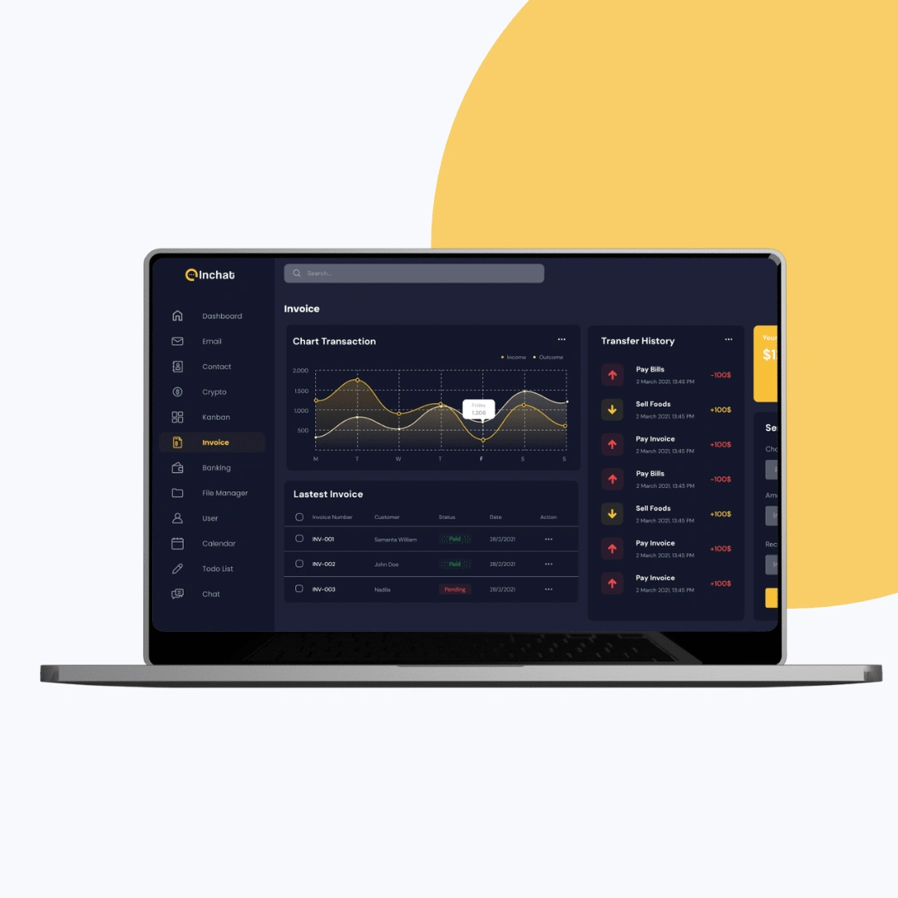

A dual-mode dashboard that makes AI-driven stock data feel simple to read and act on.
InChat is an AI-powered stock market dashboard delivering real-time analytics, predictive insights, and intelligent alerts. I designed the UI/UX, turning a dense, data-heavy admin panel into a clean, modular interface that analysts, traders, and financial managers can navigate at speed.

The challenge: complex financial data that had to feel simple
InChat needed a clean, professional, data-centric interface that could simplify live stock tracking while enabling faster, AI-driven decisions. The core problem was designing a high-performance admin panel UI that made complex data feel accessible, actionable, and easy to navigate. Target users were analysts, traders, and financial managers who needed speed, clarity, and customization during long working sessions.
I set four objectives: simplify data interpretation through clean hierarchy, integrate predictive AI insights without intrusion, build an adaptive layout for real-time updates and multiple roles, and keep the system customizable and scalable for future modules.


The approach: user-first UX and a modular UI system
The team worked through six phases, from discovery and information architecture to wireframes, visual design, smart engagement, and UI delivery. Data modules were grouped by priority, role-based dashboards were mapped, and wireframes tested layout density and widget placement before any visual polish was added.
Visual design brought precision through a balanced palette for dark and light modes, soft contrasts and typography tuned for long sessions, clear icon sets, and consistent spacing and grids. AI suggestions were embedded contextually with in-line nudges, customizable alerts for price movements and volatility, and visual cueing that signals urgency without alarm.


The outcome: a scalable system built for signal, not noise
The redesigned dashboard made InChat's complex data environment feel approachable and efficient, blending advanced AI logic with minimal, usable design. I delivered fully responsive high-fidelity screens for web and tablet, design tokens for color, typography, spacing, and themes, reusable components including charts, tables, filters, modals, and alerts, and developer handoff documentation with component states and interaction patterns.
The dual-mode UI adapts across work settings, drag-and-drop widgets give users personal layout flexibility, visual consistency speeds up new feature rollouts, and clear data visualization helps users spot signals at a glance, supporting both beginner onboarding and power-user workflows.
